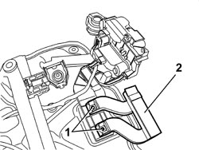

7005D24 FRONT DOOR WINDOW REAR GUIDE - R R
- Path
- Procedures > 70 FITTINGS > 7005 PASSENGER COMPARTMENT FRONT SIDE DOORS > 7005D FRONT DOOR WINDOW GLASSES > 7005D24 FRONT DOOR WINDOW REAR GUIDE - R R
- Kind
- repair procedure (removal / refitting; the operation number is the code)
- Applies to
- all engines; all production periods
- Interactive page
- https://sloeber94.github.io/elrnDB/#/939011130
Applies to: all engines; all production periods
 Removing
Removing
 Refitting
RefittingOp. 7005D30 FRONT SIDE DESCENDING WINDOW GLASS SCRAPER (INNER) (ONE), LEFT OR RIGHT - R.R.
Op. 7005D15 FRONT SIDE DOOR DESCENDING WINDOW GLASS (ONE) LEFT OR RIGHT - R.R
Op. 7005C17 FRONT SIDE DOOR LOCK BARREL - R.R.
Op. 7005A08 INTERIOR SUPPORT FRAME FOR ONE SIDE DOOR - R.R. WITH DOOR PANEL REMOVED
1. Undo the rear guide fixing bolts.
2. Remove the guide.

Applies to: all engines; all production periods
Refitting
Removing- Check that the rear guide is not damaged.
- Position the guide and secure it using the bolts.
Op. 7005A08 INTERIOR SUPPORT FRAME FOR ONE SIDE DOOR - R.R. WITH DOOR PANEL REMOVED
Op. 7005C17 FRONT SIDE DOOR LOCK BARREL - R.R.
Op. 7005D15 FRONT SIDE DOOR DESCENDING WINDOW GLASS (ONE) LEFT OR RIGHT - R.R
Op. 7005D30 FRONT SIDE DESCENDING WINDOW GLASS SCRAPER (INNER) (ONE), LEFT OR RIGHT - R.R.
Topics linked from this page (4)
- 7005A08 INTERIOR SUPPORT FRAME FOR ONE SIDE DOOR - R.R. WITH DOOR PANEL REMOVED
- 7005C17 FRONT SIDE DOOR LOCK BARREL - R.R.
- 7005D15 FRONT SIDE DOOR DESCENDING WINDOW GLASS (ONE) LEFT OR RIGHT - R.R
- 7005D30 FRONT SIDE DESCENDING WINDOW GLASS SCRAPER (INNER) (ONE), LEFT OR RIGHT - R.R.
Topics that link to this page (6)
- 5505B10 FRONT DOOR WIRING (ONE), LEFT OR RIGHT - R.R. WITH WATER GUARD OR FRAME DETACHED
- 5505B11 FRONT DOOR WIRING (ONE) LEFT OR RIGHT - R.R
- 7005D25 FRONT DOOR WINDOW REAR GUIDE - R R
- 7005N20 FRONT SIDE DOOR LOCK MOTOR/CATCH ASSEMBLY, LEFT OR RIGHT - R.R WITH DOOR PANEL AND SUPPORT FRAME REMOVED
- 7005N21 FRONT SIDE DOOR LOCK MOTOR/LOCK ASSEMBLEY FOR ONE DOOR, LEFT OR RIGHT - R.R.
- 7205E37 STRIPPING FRONT SIDE DOOR INTERIOR SUPPORT FRAME